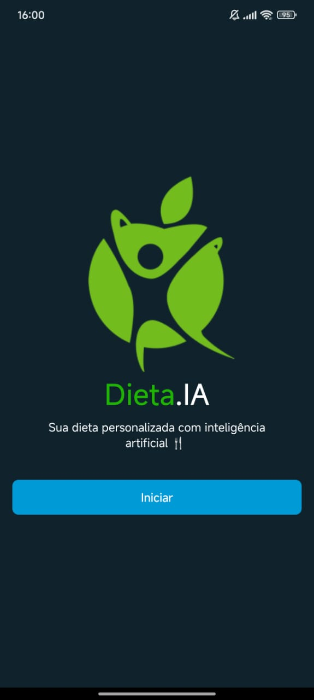
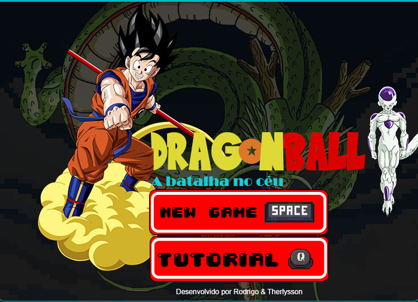
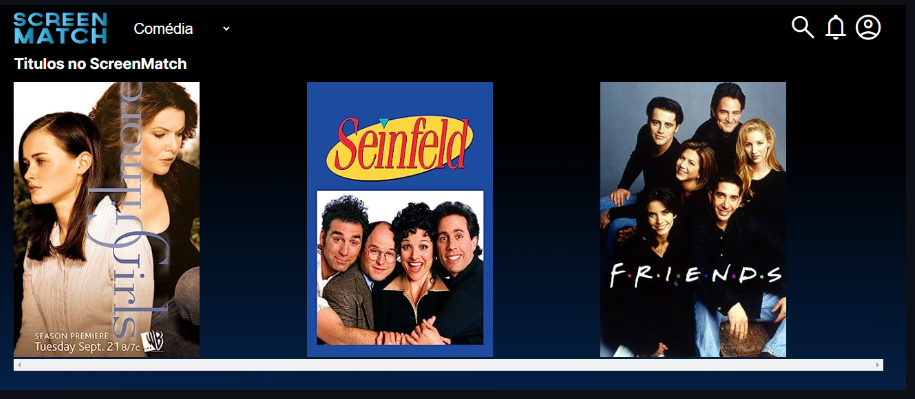
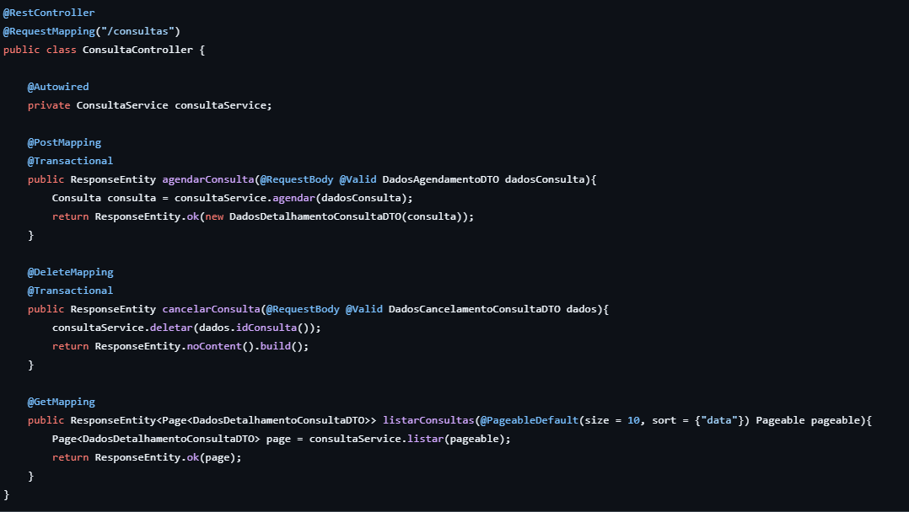
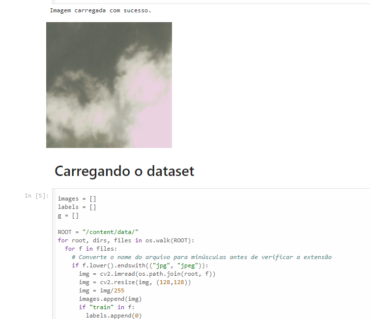
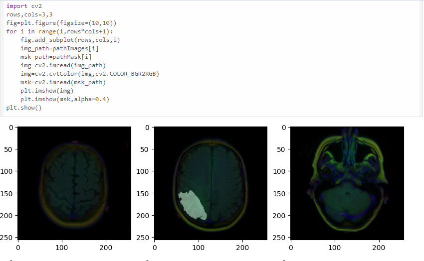
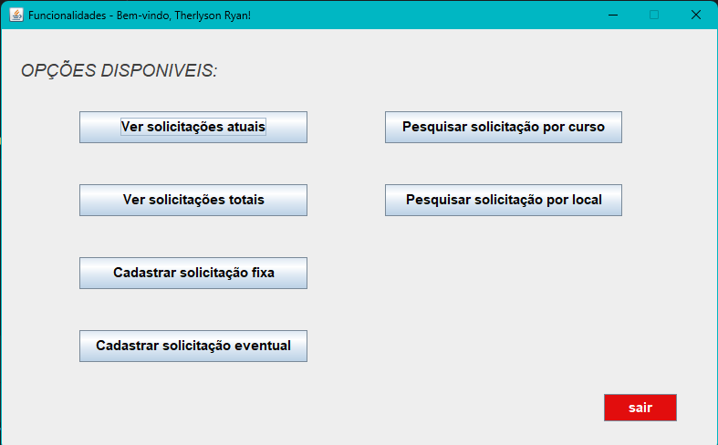

Dieta.AI
Dieta.AI é um aplicativo mobile que gera dietas personalizadas usando IA,
baseado nas informações fornecidas pelo usuário, como peso, altura, idade, metas de fitness e preferências.
Ele oferece sugestões de refeições, suplementos e permite o compartilhamento direto do plano gerado.
See project

Dragon ball o jogo
Jogo feito utilizando a linguagem python, e a biblioteca Pygame.
trata-se de um projeto acadêmico feito para uma avaliação de Algoritmos 1 da minha faculdade.
O intuito do jogo é derrotar a quantidade de freezas possiveis, mas com o passar do tempo a dificuldade vai
aumentando ficando mais dificil matar os freezas.
See project

Screen Match
Screen Match é uma API desenvolvida com Spring Boot e Java para gerenciar um sistema de classificação de filmes e séries.
Ele permite realizar operações CRUD para gerenciar conteúdos audiovisuais, como filmes e séries, e armazenar informações em um banco de dados relacional.
Este projeto visa ajudar na organização e avaliação de filmes e séries, sendo uma ferramenta útil para entusiastas e críticos de cinema.
See project

VollMed API
O projeto VollMed API é uma API RESTful para uma clínica médica, permitindo a gestão de pacientes e médicos, agendamento e cancelamento de consultas.
Desenvolvida com Java 17, Spring Boot, MySQL, entre outras ferramentas, ela oferece operações CRUD essenciais para médicos e pacientes.
Esta API visa otimizar as operações da clínica e melhorar a eficiência no atendimento aos pacientes.
See project

Classificação de imagens de satélite
Projeto acadêmico científico para classificar imagens de satélite. Feito utilizando a linguagem python
para treinar a rede neural com o intuito de classificar um conjunto de dados de classificação de imagem de satélite-RSI-CB256,
este conjunto de dados tem 4 classes diferentes misturadas
de sensores e instantâneo do mapa do Google. Utilizei para esse projetos bibliotecas como keras e numpy.
See project

Segmentação de tumores cerebrais
Projeto acadêmico científico para segmentar tumores cerebrais em imagens de Ressonância Magnética.
Utilizando a linguagem python e a rede neural convolucional U-NET
See project

Projeto de alocação de salas e espaços
Projeto final da disciplina de linguagem de programação 2.
Programa utilizando linguagem java e conceitos de orientação a objetos, coleções, exceções e arquivos.
Também foi utilizado java swing para criar a interface gráfica.
Esse programa tem o intuito de auxiliar um departamento no problema de alocar salas e espaços compartilhados referente a uma universidade.
See project